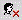

| Lorsque vous procédez à
Lire un message
, en cliquant sur le champ "Sujet" correspondant, une nouvelle barre d'outils apparaît, avec les boutonsspécifiques à la nouvelle page affichée:
Barre d'outils de messagerie:

Eléments de référence:
| Terme/Icône |
Nom/Texte bulle |
Action correspondante |
 | Retour au précédent | Vous ramène à la boîte aux lettres précédente. |
 | Composer un nouveau message* | Permet la rédaction d'un nouvel E-mail. |
 | Répondre | Pour répondre à l'expéditeur du message. |
 | Répondre à tous | Pour répondre à tous les expéditeurs du message, y compris ceux qui l'ont transféré (fait suivre). |
 | Faire suivre | Faire suivre (transférer) le message à d'autres destinataires. |
 | Faire suivre en tant qu'attachement | Faire suivre en tant que pièce jointe. |
 | Imprimer | Affiche une version imprimable du message, et enpropose l'impression effective. |
 | Calendrier | Ouvre le calendrier |
 | Déconnecter | Ferme votre session Open Webmail |
Icônes additionnelles:
| Terme/Icône |
Nom/Texte bulle |
Action correspondante |
![Télécharger [Message]](../../images/buttons/disk.gif) | Télécharger [Message] | Affiche le contenu du message dans une nouvelle fenêtre pour en permettre la sauvegardesur le poste de consultation par la commande Fichier > Enregistrer sous du navigateur. |
![Importer adresses [expéditeur]](../../images/buttons/add_address.gif) | Importer adresses [expéditeur] | Ajoute l'expéditeur de l'E-mail à votre carnet d'adresses. |
|
 | Bloquer les E-mails [expéditeur] | Bloque les E-mails émis par cet expéditeur en ajoutant un filtre. |
![Bloquer le relais SMTP [Relais]](../../images/buttons/block_smtp.gif) | Bloquer le relais SMTP [Relais] | Bloque le relais
SMTP
qui a transmis ce message. |
La barre d'outils de messagerie comporte une deuxième partie (sous les boutons, voir en haut):
Les flèches gauche et droite de part et d'autre du nombre affiché permettent de se déplacer d'un message à l'autredans la boîte aux lettres (la flèche gauche permet d'accéder au message précédent tandis que la flèche droite permet d'atteindre le message suivant). Le nombre situé entre les flèches indique quel message vous consultez. (1 correspond au premier message dans la boîte aux lettres considérée).Notez que cet outil de navigation d'un message à l'autre est répété en dessous du corps du message.
Le menu déroulant Modèles de documents pour répondre permet d'effectuer un choix de modèle de message pour votre réponse. Ouvrez ce menu pour afficher la liste des modèles dont vous disposez. Une fois que vous en avez sélectionné un, vous pourrez répondre à l'aide de celui-ci. Si vous n'avez pas créé de modèle, cliquez sur le bouton "Editer modèle de document" (
 ) qui vous permettra de créer/modifier des modèles. Pour la définition des modèles, voir
Barre d'outils de réglages
. ) qui vous permettra de créer/modifier des modèles. Pour la définition des modèles, voir
Barre d'outils de réglages
.
* Si vous utilisez ce bouton dans l'onglet brouillons (voir
Gérer vos dossiers
), cela provoquera l'édition du brouillon du message, plutôt que la création d'un nouvel E-mail. |